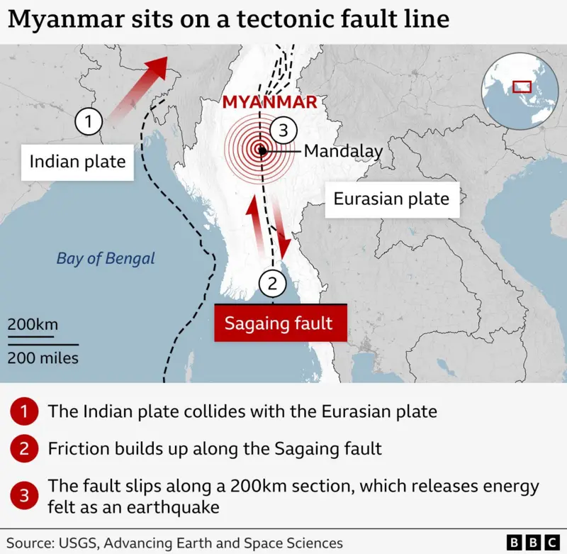
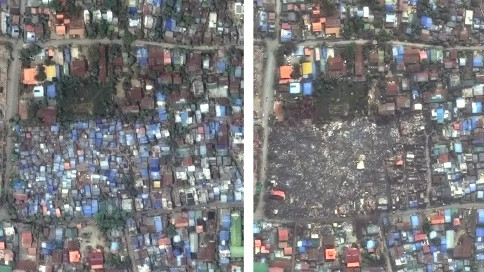
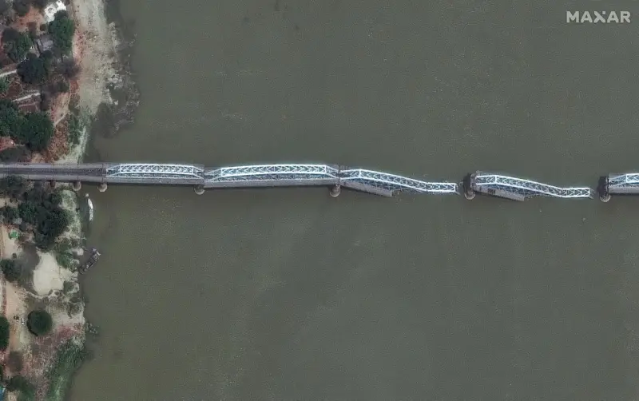

Summary of The Earthquake
On march 28, 2025 7.7 magnitude earthquake hit the central Myanmar. The earthquake's epicenter was located 16km (10 miles) north-west of the town of Sagaing, the US Geological Survey (USGS) said. This is also near Myanmar's second-largest city, Mandalay, with a population of about 1.5 million people - and about 200km (125 miles) north of the capital, Nay Pyi Taw.
The first earthquake struck at about 12:50 (06:20 GMT), according to the USGS. A second earthquake struck 12 minutes later, with a 6.4 magnitude. Its epicentre was 18km south of Sagaing.
After shocks had continued since - the latest on Sunday was a magnitude-5.1 tremor north-west of Mandalay, with a resident telling BBC Burmese it was the strongest they had felt since 28 March. Thailand, India and China also felt the earthquake and among them, Thailand had casualties and destruction of buildings. The earthquake was so severe that it caused a high-rise under construction building in Bangkok collapsed which is almost 1000km away. According to data compiled by the Democratic Voice of Burma, 4,461 people died and 11,366 more were injured. The military-led State Administration Council said 3,770 died, 106 were missing and 5,106 others were injured. Meanwhile, air strikes have continued in Myanmar, the People's Defense Force says. The BBC's Yvette Tan looks at the ongoing troubles in the war-torn country.
Cause of the Earthquake
The earth's upper layer is split into different sections, called tectonic plates, which are all moving constantly. Some move alongside each other, whilst others are above and below each other.
It is this movement that causes earthquakes and volcanoes.
Myanmar is considered to be one of the most geologically "active" areas in the world because it sits on top of the convergence of four of these tectonic plates - the Eurasian plate, the Indian plate, the Sunda plate and the Burma microplate.
There is a major fault called the Sagaing fault, which cuts right through Myanmar north to south and is more than 1,200km (746 miles) long.
Early data suggests that the movement that caused Friday's 7.7-magnitude earthquake was a "strike-slip" - where two blocks move horizontally along each other.
This aligns with the movement typical of the Sagaing fault.

Mandalay Resident: "We Lost Everything"
One person who lives in Mandalay - a region very close to the epicentre - has been speaking to the BBC's World Service about the aftermath of the earthquake.
"I feel so sorry to see this situation. All the pagodas and temples, including stairways, in my village have collapsed" they say.
"We lost everything. I feel so sad to see this kind of sorrowful situation.
"Up until now, I've never experienced anything similar to this. This is the first time. I am very sad."
Hurdles in Rescuing and Saving People
Rescue teams, including local volunteers and international responders, lacked essential heavy machinery and specialized tools. In Mandalay, rescuers resorted to borrowing equipment from private businesses, and residents appealed on social media for donations of necessary gear. The collapse of vital infrastructure, such as bridges and roads, further hindered access to affected areas.
Another problem was communication breakdowns. The military-imposed internet blackouts, combined with damaged telecommunications infrastructure, severely disrupted coordination efforts.
Overwhelmed medical facilities caused rescue halt. Hospitals, including Mandalay General Hospital, were overwhelmed with casualties. Many facilities were damaged or destroyed, and medical supplies were scarce. The lack of capacity led to delays in treatment and increased mortality rates.
Myanmar military air strikes 'outrageous' - UN human rights monitor
The UN has described the ongoing military air strikes as “completely outrageous and unacceptable”.
Tom Andrews, UN Special Rapporteur on Human Rights, told the BBC that it was "nothing short of incredible” that the military was continuing to “drop bombs when you are trying to rescue people” in the wake of the devastating earthquake.
He called on the military regime - which seized power in a coup nearly four years ago - to stop all military operations. “Anyone who has influence on the military needs to step up the pressure and make it very clear that this is not acceptable,” he said.
He also warned that Myanmar's military has a longstanding practice of denying aid to areas where resistance groups are active.
In the past relief efforts, he said the military have blocked aid and arrested aid workers.
“I'm afraid I'm fully expecting that that will be the case with this disaster," he said.
"The junta does not reveal the truth it also has a habit of blocking humanitarian aid from getting to where it is most needed. They weaponise this aid. They send it to those areas that they have control of, and they deny it to areas that they do not.”
Armed wing of Myanmar's opposition says it will stop fighting for two weeks
The armed wing of Myanmar's National Unity Government (NUG) - formed by groups that oppose the military junta in power since 2021 - says it will not engage further and instead implement a two-week ceasefire so that much-needed aid can get into areas affected by yesterday's earthquake.
The People's Defence Force (PDF) says that in areas under its control, they will work with the UN and international aid agencies "to ensure security, transportation, and the establishment of temporary rescue and medical camps".
Satellite images show scale of destruction in Myanmar
Satellite imagery released by Maxar Technologies has revealed some of the damage to Mandalay and Sagaing following yesterday's earthquake. The images, captured today, show damage to pagodas, temples and residential buildings, as well as the Sagaing Bridge, which collapsed into the Irrawaddy River yesterday. In one striking image, a collection of shacks and buildings in a southern area of Mandalay have completely collapsed.


The difficulties of reporting from Myanmar
It remains difficult to build an accurate picture of what the situation is there, particularly in the areas worst affected. A journalist who had experience working in Myanmar before the coup says it was a challenging place to work from then, but has only grown more so since amid widespread conflict, economic turmoil and a crackdown on media and dissenting voices. Internet is heavily restricted, with internet speeds slow even before the earthquake destroyed much of the country's infrastructure - the scale of which is still not clear.
The military - headed by Senior General Min Aung Hlaing - who is facing an International Criminal Court arrest warrant – has also been accused of weaponizing internet shut downs to stifle what is widespread resistance to military rule. Journalist safety is also an issue, with reporters facing the risk of torture, arrest or murder, according to Reporters Without Borders.
Myanmar's military leader makes rare appeal for International Aid
Myanmar's military junta has made an unusual appeal for international assistance, urging foreign governments and aid organizations to provide emergency relief. Despite years of global isolation due to its authoritarian rule and human rights abuses, the regime sought help as the scale of destruction overwhelmed domestic capacities. However, the junta’s appeal was met with skepticism, as many international actors questioned whether the aid would reach all affected populations, particularly in conflict zones and opposition-held areas.
International Support and Aid
United Nations
The United Nations has allocated $5 million for immediate relief efforts. The World Health Organization (WHO) has provided nearly 3 tons of medical supplies, including trauma kits and multipurpose tents, to hospitals in the worst-hit areas.
Neighboring Countries
- China: Sent over 135 rescue personnel and experts along with medical kits, generators, and pledged approximately $13.8 million in emergency aid.
- India: Launched "Operation Brahma," deploying five Navy ships and six Air Force aircraft carrying 400 tons of relief materials, including tents, medicines, and establishing a 200-bed field hospital.
- Russia: Deployed 120 rescuers and medical teams, along with search-and-rescue equipment, to assist in relief efforts.
- Bangladesh: Sent emergency relief packages to assist affected communities.
Resilience of the People
In the aftermath of the earthquake, the resilience of its people has been a beacon of hope amid widespread destruction. Despite facing immense challenges, communities have demonstrated remarkable strength and solidarity.
Community-Led Response and Solidarity
In the hardest-hit areas, such as Mandalay's Sein Panyat suburb, residents have shown extraordinary resilience. Following the destruction of their homes, many have come together to clear debris, provide shelter, and support one another. Local organizations, including the Myanmar Red Cross Society, have mobilized quickly, with volunteers administering first aid, distributing emergency relief items, and providing psychosocial support.
Support for Women and Girls
Recognizing the unique challenges faced by women and girls in disaster settings, initiatives have been launched to provide dignity kits containing essential hygiene items. These kits not only address immediate needs but also help restore a sense of dignity and normalcy. For instance, a young woman from Southern Shan shared that receiving a dignity kit reminded her that she still mattered during such a challenging time.
Nevertheless, the unwavering spirit of Myanmar's people continues to shine through. Their collective efforts, supported by both local and international partners, are laying the foundation for recovery and rebuilding. As one community leader aptly stated, "The people of Myanmar have a very high resilience. Everybody likes to help and everybody contributes in their own way".